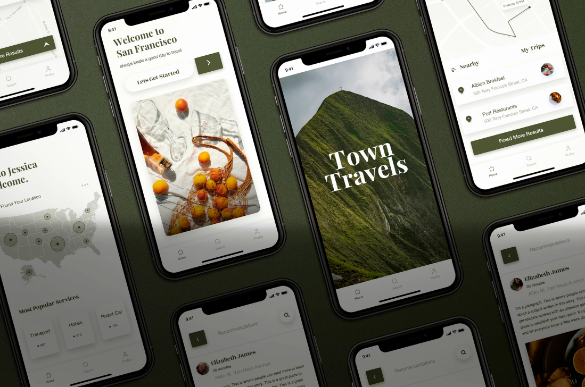

Organización de datos, ¿por qué el uso de Dashboards ayuda a tu negocio?
Dentro del mundo de los negocios existen muchos términos que se utilizan para
indicar diferentes áreas, como por ejemplo Business Intelligence, Data Science, Data Analytics,
Data
Warehouse, etc. Para las pequeñas empresas o los emprendimientos, estos conceptos pueden llegar
a
ser muy confusos y en algunos casos hasta se encuentran fuera del alcance del negocio en
cuestión.
Desde Powerdash, buscamos ayudarte de una manera más sencilla y que resulte eficiente para que
tu
negocio no solamente tenga éxito, sino que también pueda crecer. Una de las formas que
consideramos
como primer paso es organizar la información que maneja la empresa, y esto es lo que llamamos el
Data Warehouse, en donde no importa el tamaño de tu organización, toda la información que entra
y
sale de tu negocio se encuentra ahí.
Leer
más